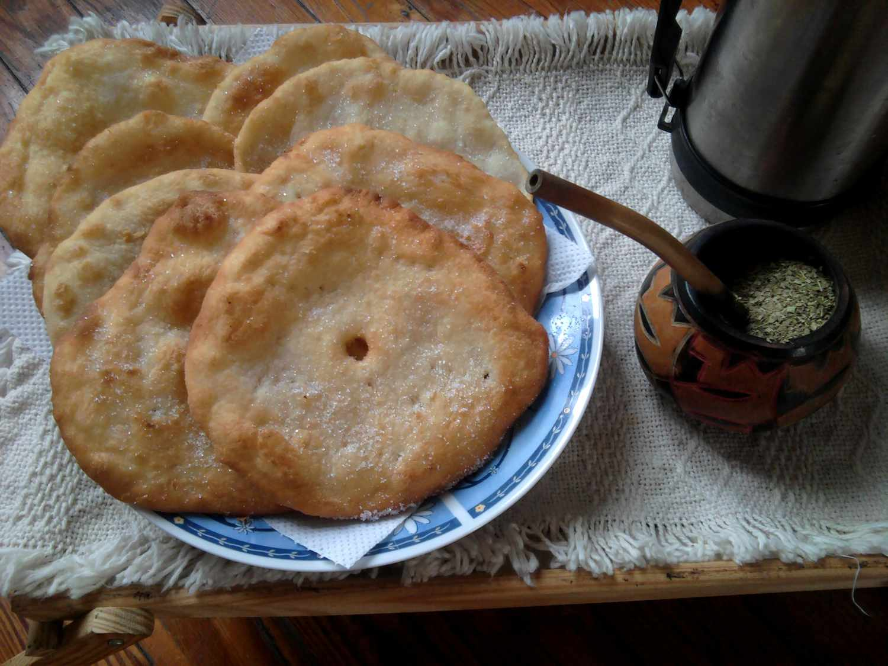

Tortafrita

The name tortas fritas translates to "fried cakes" or "fried pies." Though they resemble Native American fry bread, tortas fries are more like fried biscuits. Unlike fry bread, this dough is prepared with more fat (usually lard), like biscuit dough, but you can substitute vegetable shortening instead.
Ingredients
- 2 1/4 cups all-purpose flour
- 2 1/2 teaspoons baking powder
- 3/4 teaspoon salt
- 2 tablespoons unsalted butter
- 2 tablespoons vegetable shortening, or lard
- 1 cup milk
- 1 quart vegetable oil, for frying, more or less as needed
- Sugar, for garnish
Steps to Make It
- Mix flour, baking powder, and salt in a bowl. Add 2 tablespoons butter and 2 tablespoons shortening or lard and mix into the flour with your fingers until well blended.
- Add milk gradually, stirring and then gently kneading as you go, until the mixture forms a soft, smooth dough (add more flour if the mixture becomes too wet).
- Roll dough out to about 1/4-inch thickness, and use a round cutter to make 3 1/2-inch circles. (Or separate dough into about 10 pieces, shape each piece into a ball, and flatten each ball into a pancake about 1/4 inch thick). Poke a hole in each center with your finger, which prevents them from puffing up.
- Add enough vegetable oil (or melt enough shortening or lard) in a small skillet to have a depth of about an inch of fat. Heat until fat sizzles when the dough is added. Fry breads in batches until golden brown on both sides, turning them once.
- Drain fried tortas on paper towels and sprinkle with sugar while still hot.